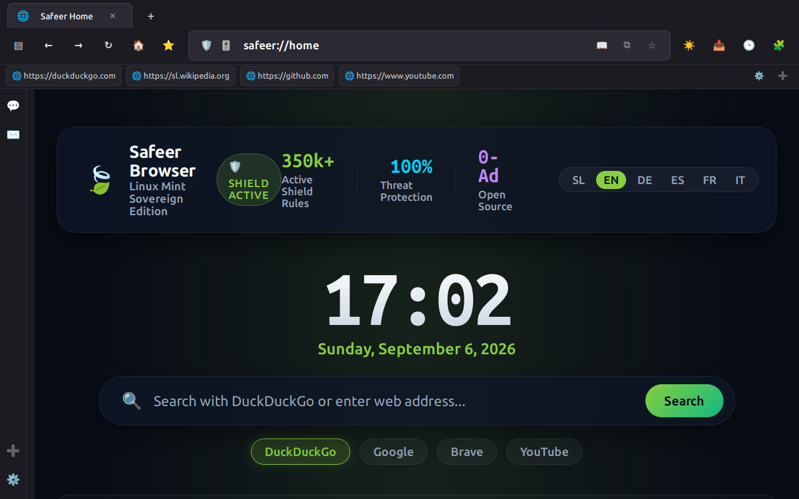

Bliskovito hiter spletni brskalnik, spisan neposredno v GTK3 in WebKit2GTK za namizja Cinnamon, MATE in XFCE. Porabi do 3× manj pomnilnika RAM kot Chromium, zažene se v pol sekunde, ponuja uvoz zaznamkov z enim klikom in ne prenaša nobenih podatkov na tuje strežnike.
Ctrl+Shift+T, Ctrl+Tab, Ctrl+K), strict 3rd-party cookie isolation, and local C2 botnet filtering (abuse.ch). Packaged as a clean 1.1 MB .deb with safe alternatives priority (40) — it will never aggressively hijack your default browser.
sudo apt install ./safeer-browser_1.0.7_all.deb

Narejen za uporabnike, ki cenijo odprto kodo, lahkotnost delovanja in popoln nadzor nad svojim računalnikom.
Namesti se neposredno v /usr/lib/safeer-browser/ in /usr/bin/safeer. Varna prioriteta Debian alternatives (40) zagotavlja, da se brskalnik nikoli agresivno ne vsili kot privzeti.
Nova vrstica zaznamkov (Ctrl+Shift+B) in hitri meni (Ctrl+B). Samodejno zazna nameščen Firefox (bere neposredno iz places.sqlite) ter Chrome/Brave in uvozi vaše priljubljene strani.
Prijeten 1-minutni začetni čarovnik: izbira iskalnika (privzeto DuckDuckGo, Brave, Google), 1-klik uvoz profilov ter možnost nastavitve kot privzeti brskalnik. Gumb za dom (🏠) in Alt+Home.
Bliskovito iskanje po strani z nativnim WebKit FindControllerjem ter takojšen tisk ali shranjevanje v ~/Prenosi/<naslov>.pdf z enim pritiskom bližnjice.
Ob zaprtju varno shrani vsa odprta spletna mesta. Ob naslednjem zagonu vas prijazno vpraša za obnovo zavihkov – točno tam, kjer ste ostali.
Izbirajte med temami Mint Emerald, Midnight Dark, Neon Cyberpunk in AMOLED Black. V Customizer Studiu lahko dodate svoj lasten CSS za popolno prilagoditev namizju.
Vsaka URL poizvedba se preveri v lokalnem (k)$ obrnjenem drevesu domen v manj kot 0.2 ms. Preprečuje stike z znanimi botneti, phishingom in zlonamernimi domeni.
Brez napihovanja: poglejte točno, kje ima Safeer prednost in kje se razlikuje od standardnih rešitev.
| Funkcionalnost | 🛡️ Safeer Browser (GTK3) | Mozilla Firefox | Brave Browser | Zen Browser | GNOME Web (Epiphany) |
|---|---|---|---|---|---|
| Pakiranje za Mint / Ubuntu | ✓ Naravni .deb (1.1 MB) |
Prehod na Snap / APT | Zunanji repo / .deb | Flatpak / AppImage | Flatpak / apt |
| Poraba RAM-a (1 zavihek) | ✓ ~110 MB | ~350–500 MB | ~400–650 MB | ~450–700 MB | ~180–250 MB |
| YouTube 0 oglasov out-of-the-box | ✓ Vgrajeno (brez vtičnikov) | ✗ Zahteva uBlock Origin | ✓ Brave Shields | ✗ Zahteva vtičnike | ✗ Brez zaščite |
| C2 Botnet zaščita (abuse.ch Trie) | ✓ Vgrajena lokalno ((k)$) | ✗ Google SafeBrowsing ping | ✗ Google SafeBrowsing | ✗ Standardni filtri | ✗ Brez zaščite |
| 1-klik uvoz iz Firefoxa in Chroma | ✓ SQLite & JSON avtodetekcija | Prek čarovnika | Prek čarovnika | Uvoz prek profila | Samo HTML uvoz |
Zagon iz terminala (safeer <url>) |
✓ Enotna instanca (Unix socket) | Podprto | Podprto | Podprto | Podprto |
| Iskanje na strani (Ctrl+F) | ✓ WebKit FindController v živo | Podprto | Podprto | Podprto | Podprto |
| Tisk v PDF z varnim imenom (Ctrl+P) | ✓ GTK dialog + samodejno v ~/Prenosi | Podprto | Podprto | Podprto | Podprto |
| Telemetrija in profilacija | ✓ 0 telemetrije (100% lokalno) | Privzeto vklopljena | Kripto funkcije, nagrade | Odprta koda | Brez telemetrije |
1. Prenesite .deb datoteko s spodnjim gumbom.
2. V mapi Prenosi dvokliknite datoteko.
3. Pritisnite Namesti paket (Gdebi ali Upravitelj paketov).
Odprite terminal (Ctrl+Alt+T) in vnesite:
sudo apt install ./safeer-browser_1.0.7_all.deb
safeer &
f15c92aa8c4540fb3893b8ddcd7cd25dfbba19a8b9f57763bdc03ca63339c8ae safeer-browser_1.0.7_all.deb
Preverite z ukazom: sha256sum safeer-browser_1.0.7_all.deb v svojem terminalu pred namestitvijo.
💡 Iskreno o vsakodnevni uporabi: Safeer je zasnovan kot vaš hiter, lahek in zaseben vsakodnevni spletni brskalnik (branje novic, videoposnetki brez oglasov, raziskovanje, forumi). Za specifične namenske storitve z državnimi certifikati (npr. kvalificirana digitalna potrdila za e-upravo) ali specifične DRM avtorske platforme po potrebi uporabite Firefox.
Isti varnostni motor in 0 oglasov sta na voljo tudi za vaše druge naprave: